PhD
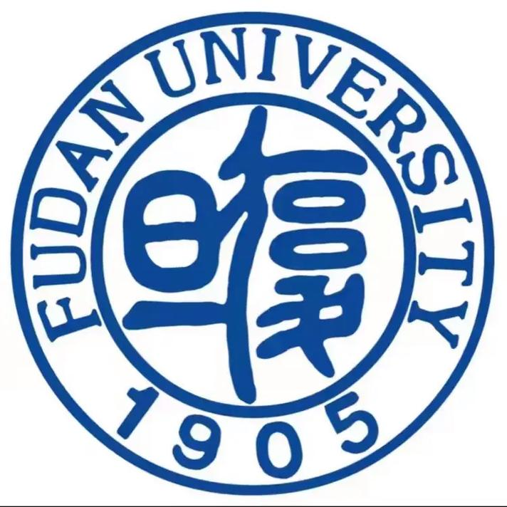
Doctor of Philosophy
Public Policy
Fudan University
Shanghai, China
Research at the crossroads of policy, culture, and ecology.
International Expert in Green Transformational Leadership & Environmental Policy, Social & Political Issues
Dr. Valeriia Tarasenko is a global expert in environmental leadership and sustainable governance, known for transforming academic research into practical tools used by organizations worldwide. With a PhD in Public Policy from Fudan University and advanced training in law, languages, and cross-cultural communication, she works at the intersection of leadership, environmental psychology, ESG strategy, and public policy.
She develops research-based models and programs that help companies, schools, NGOs, and governments build effective environmental behavior and long-term sustainability practices. Her work is guided by a strong educational mission: to make scientific knowledge accessible and to empower individuals, teams, and institutions through environmental learning that inspires action, responsibility, and global stewardship.
Her interdisciplinary background and fluency in four languages enable her to operate across diverse cultural and institutional contexts, advancing international collaboration in sustainability and environmental leadership.
She actively mentors students, collaborates with international researchers, and supports organizations in building cultures of environmental engagement and sustainable leadership.

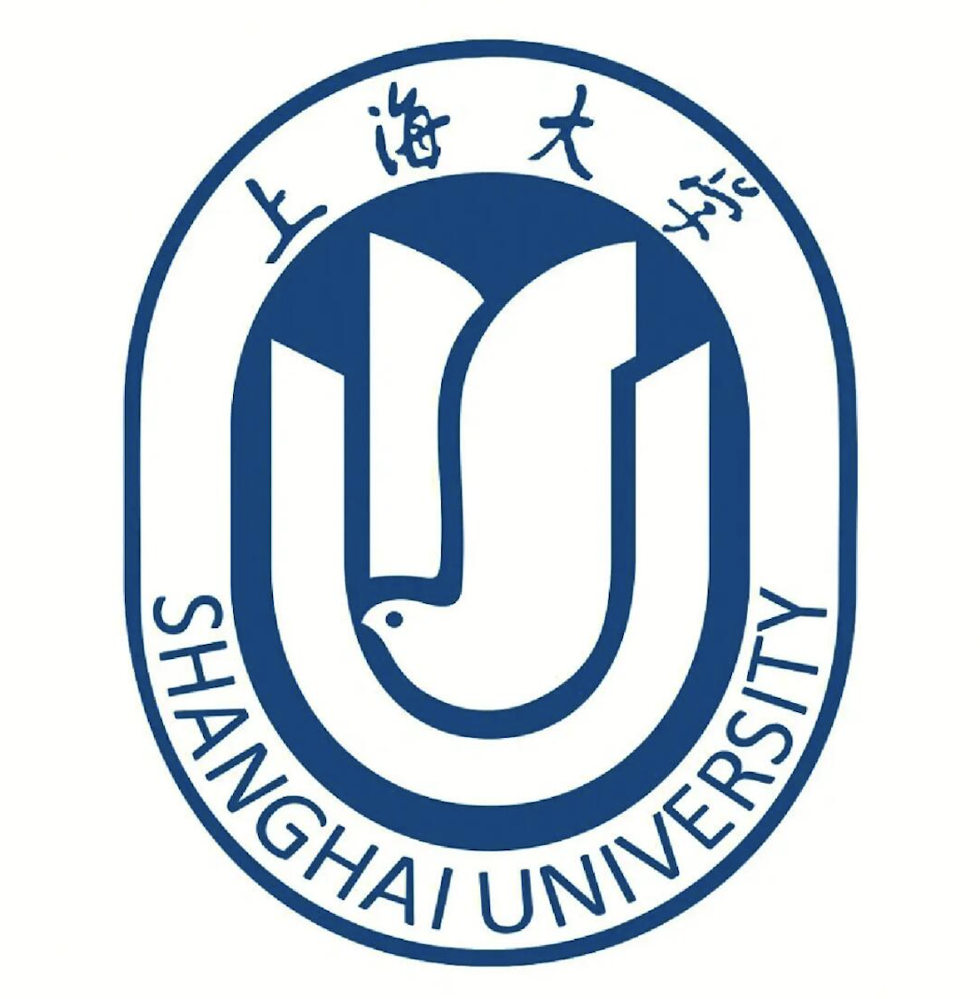
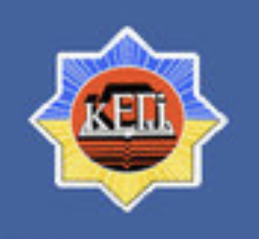
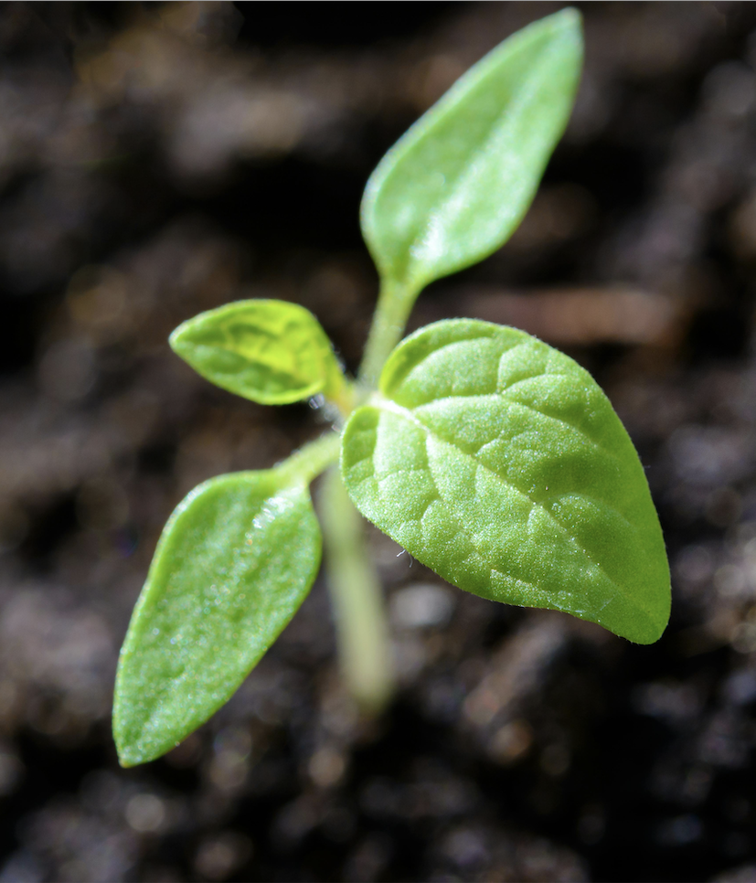
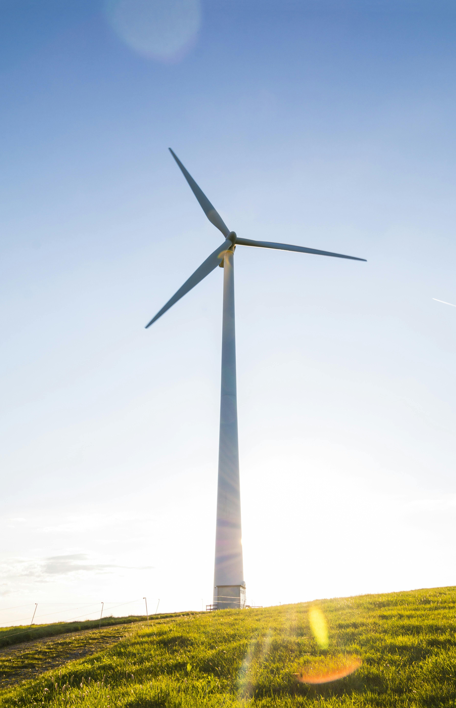
Strategies and practices that promote long-term ecological balance, resilience, and the responsible use of natural resources across organizations and communities.
Policy frameworks, governance mechanisms, and international cooperation for addressing global environmental challenges and advancing sustainable development.
Bridging civil and commercial law with ecological governance to strengthen equity, accountability, and effective institutional responses to sustainability issues.
How cultural identity, social dynamics, and political contexts shape ecological values, climate awareness, and collective action in diverse societies.
How green transformational leadership and organizational citizenship behavior foster pro-environmental responsibility and innovation within organizations.
Translating complex academic research into accessible knowledge, promoting ecological literacy, and designing educational initiatives for youth and communities to strengthen global environmental citizenship.
The International Environmental Leadership Program is a global cross-cultural sustainability initiative that I developed based on my doctoral research. It provides practical tools that help companies, schools, and NGOs build real environmental behavior and strengthen their ESG performance.
Proven internationally. Scientifically validated. Scalable everywhere.
7 countries • 1,500+ learners • 600+ employees trained
→ Explore the Program
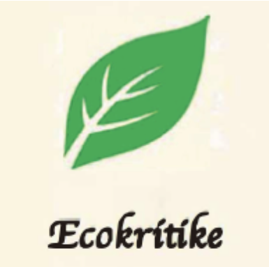
Ecokritike – International Open Access Peer‐Reviewed Journal of Environmental Humanities Contributing to editorial review, supporting the dissemination of high-quality scholarship in environmental humanities.
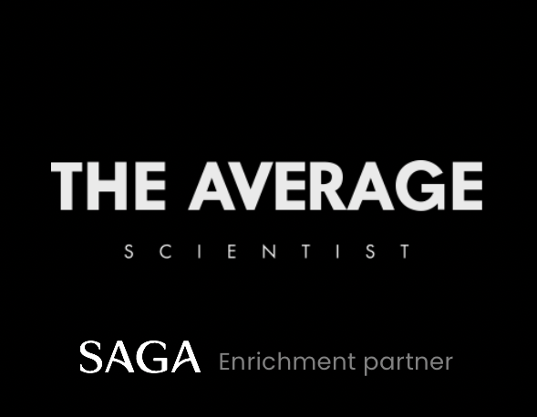
The Average Scientist (UK) Writing accessible, evidence-based articles that translate complex scientific and environmental topics for broad audiences.
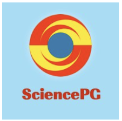
International Journal of Environmental Protection and Policy – Science Publishing Group Reviewing scholarly manuscripts, providing constructive feedback, and ensuring methodological and theoretical rigor.
This role combines the development of scientific and educational materials with collaboration across teachers, farmers, and partners, strengthening environmental programs and extending their global reach.
Designing an educational course on Whole Brain Emulation (WBE)—including curriculum structure, learning materials, and assignments—with the goal of raising participants’ knowledge and readiness in WBE.
Developed comparative analytical models for the Government Efficiency Index to assess sustainability, education, healthcare, and the efficiency of public governance across countries; ensured cross-country data comparability and produced actionable recommendations.
Developed environmental educational materials and implemented them in programs for children from vulnerable groups; coordinated HR processes, including sourcing and selecting researchers and experts, and maintaining communication with candidates and volunteers.
Consulting the company on environmental and policy matters: implementing energy-efficient solutions, promoting the use of renewable and eco-friendly materials, optimizing water supply and waste management systems, developing, proposing green initiatives and supporting sustainability efforts to reduce the environmental impact of projects.
Conducted in-depth research, coordinated the preparation of academic manuscripts, translated detailed analytical article reviews from English into Chinese, and applied expertise in analyzing key concepts and research methodologies to ensure high-quality publications.
Developed and enhanced the company’s CSR strategies, provided guidance on sustainable and eco-friendly business practices, implemented socially responsible initiatives, and organized activities aimed at strengthening environmental awareness among employees.
Supported environmental litigation and regulatory work, contributed to Environmental Impact Assessments (EIA), assisted in cases related to land, waste, and energy law, and helped organizations comply with environmental safety standards to reduce pollution.
Analyzed the impact of environmental factors on human health, integrated the company’s scientific data into research, and contributed to developing analytical recommendations aimed at reducing negative environmental effects.
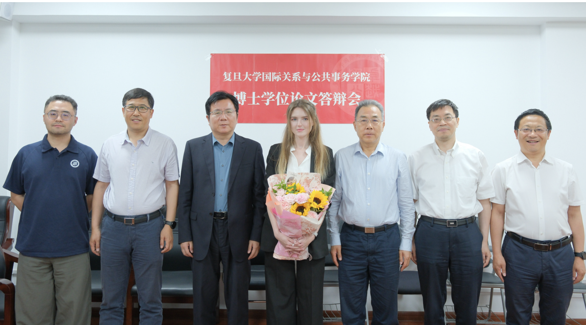
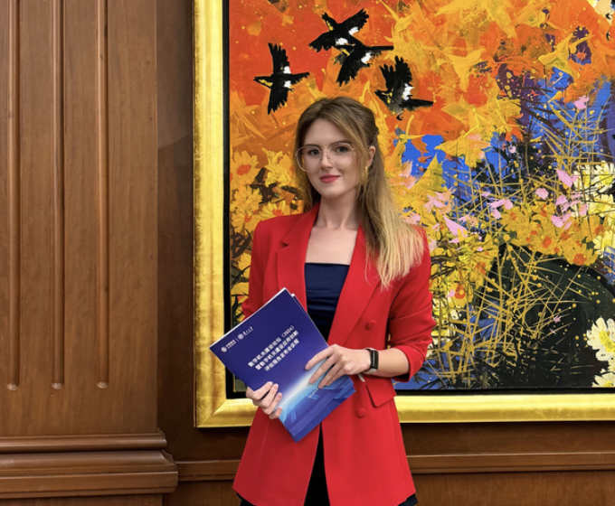
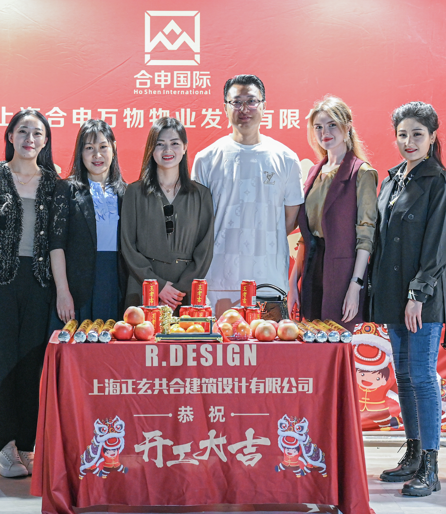
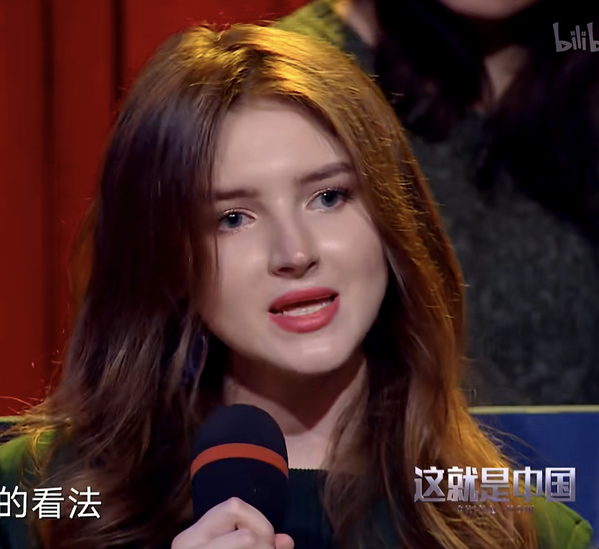
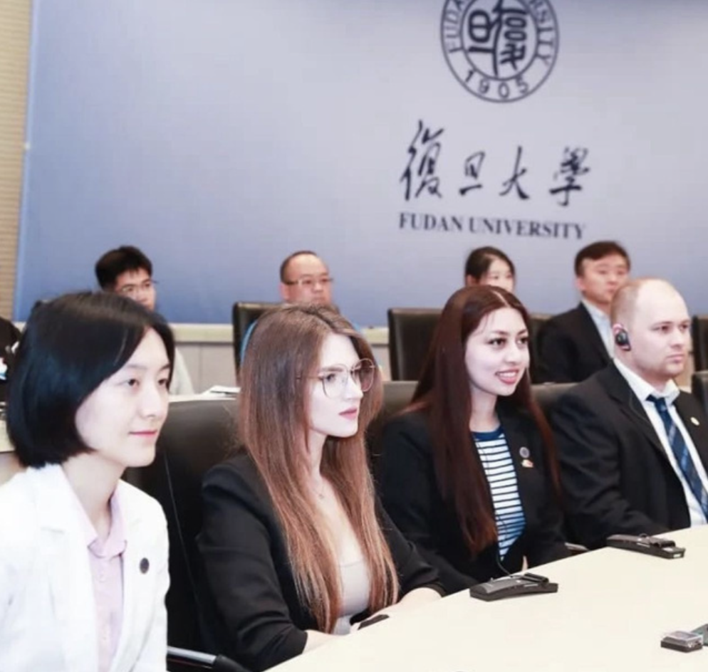
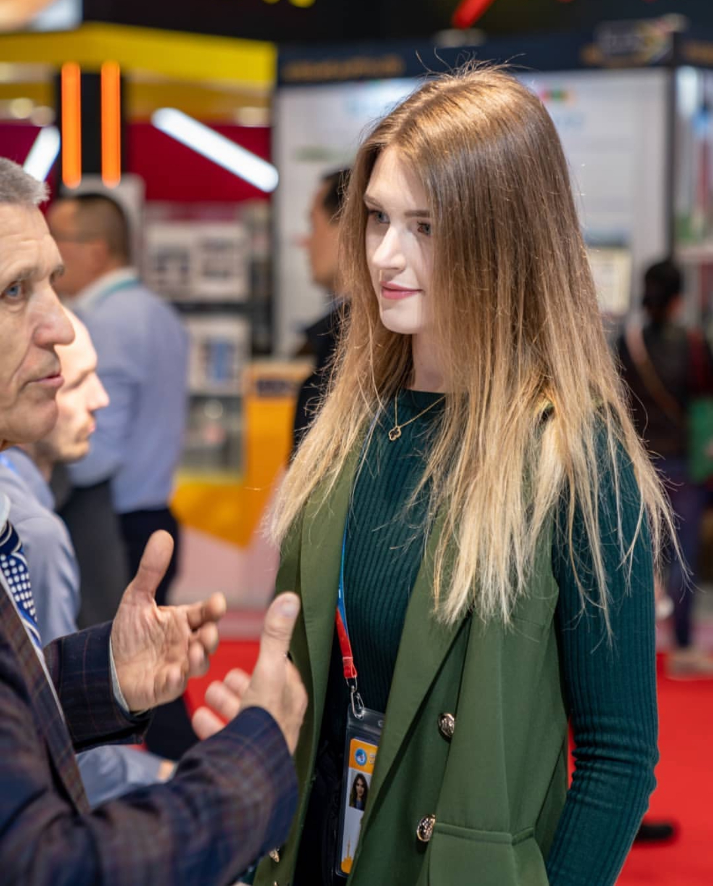
One of the most prestigious and competitive national scholarships in China, awarded to international students demonstrating outstanding academic excellence, research potential, and commitment to cross-cultural exchange. I was honored to receive this full scholarship twice:
The award covered full tuition, on-campus housing, medical insurance, and a monthly stipend. It reflects both academic distinction and international engagement, offering recipients the opportunity to pursue advanced studies in a leading global education environment.
Granted for exceptional performance in Chinese language studies and active participation in cultural exchange, this fully funded scholarship supported a one-year immersive Chinese language program in China. It covered tuition, accommodation, and health insurance.
This scholarship acknowledges outstanding achievement in promoting intercultural understanding and linguistic excellence, and is awarded to only a select group of high-performing students globally.
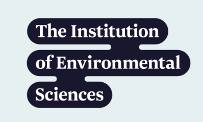
Associate Member (AMIEnvSc) of the Institution of Environmental Sciences — Active member contributing to international environmental science networks and sustainability initiatives.
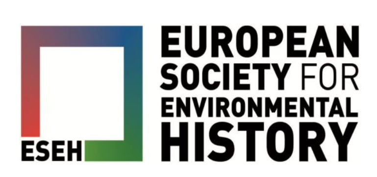
Member of the European Society for Environmental History — Active participant in European environmental history research and cross-cultural ecological dialogues.
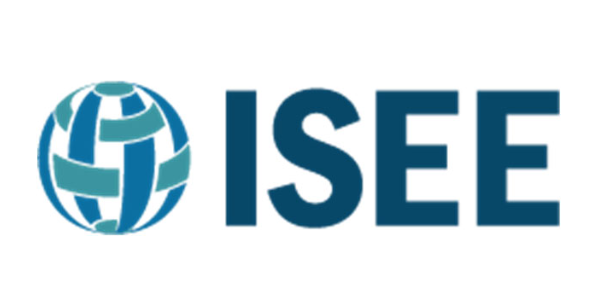
Member, International Society for Environmental Epidemiology (ISEE) — Active member; participate in regional chapters and society activities.
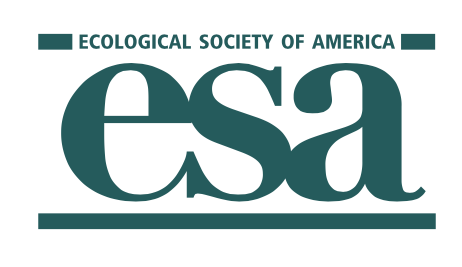
Member, Ecological Society of America (ESA) — Active participant in ecological research networks and sustainability dialogues.
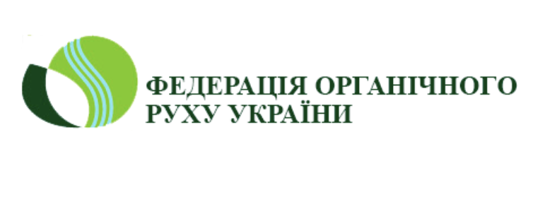
Member, Organic Federation of Ukraine — Supporter of environmentally responsible agriculture and ecological food systems in Eastern Europe.
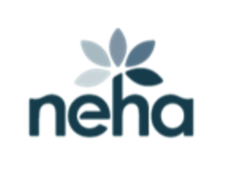
Member, National Environmental Health Association (NEHA) — Certificate of Membership granted for commitment to advancing environmental health and safety standards.
Patent Number: CN ZL 2019 1 1198557.X
Granted: March 12, 2024
Invented by Jian Guo (郭剑) and Valeriia Tarasenko (丽娜)
Issuing Authority: China National Intellectual Property Administration
This invention emerged from practical research experience, where the use of pipettes is essential for conducting experiments, transferring liquids, and collecting data in fields such as environmental science, biology, and chemistry. Traditional storage methods often lead to disorganization, contamination, unnecessary resource use, and time inefficiency.
Our device addresses these challenges by improving laboratory workflows, minimizing cross-contamination risks, and significantly reducing material waste. By extending the life cycle of laboratory equipment and encouraging systematic use, the invention promotes ecological efficiency and supports the broader shift toward sustainable scientific infrastructure.
Moreover, the device plays a vital role in enhancing analytical methods. It increases the precision and efficiency of liquid transfer processes, which are critical for ecological data analysis, while reducing the time spent on tube organization by up to four times.
The broader environmental impact of the device lies in its ability to reduce laboratory waste and resource consumption. As research institutions worldwide strive to implement green policies and responsible innovation strategies, tools like this become essential for transforming laboratory culture and advancing ecological values within the STEM community.
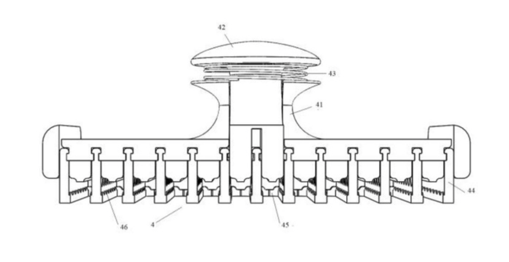
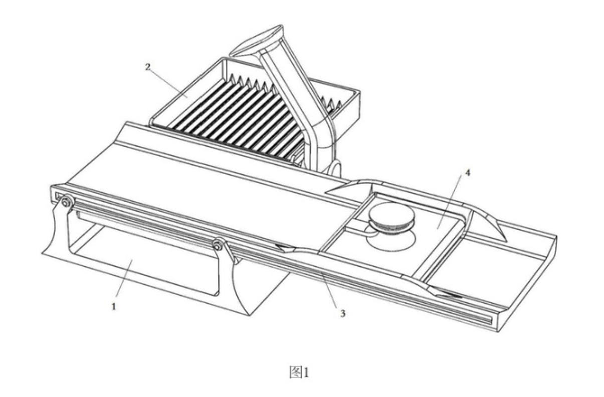
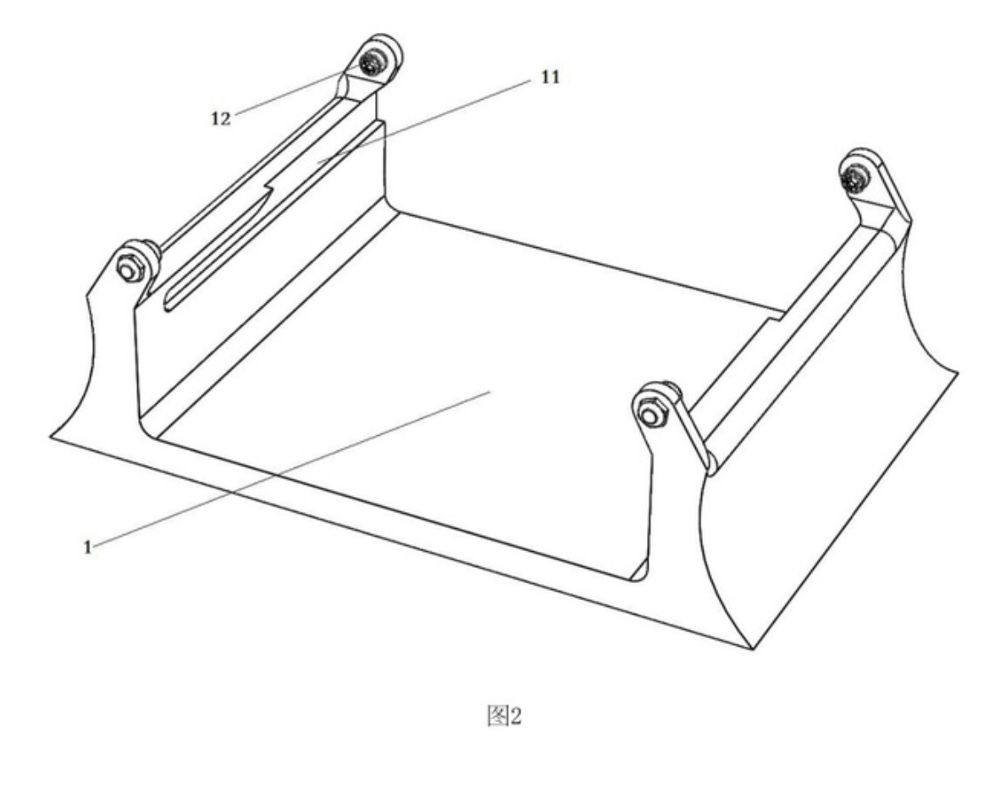
For collaboration, research projects, speaking engagements, or consulting on green leadership and environmental policy — feel free to reach out directly.
I’m always happy to hear from organizations, researchers, and teams working on sustainability, leadership, and environmental initiatives.